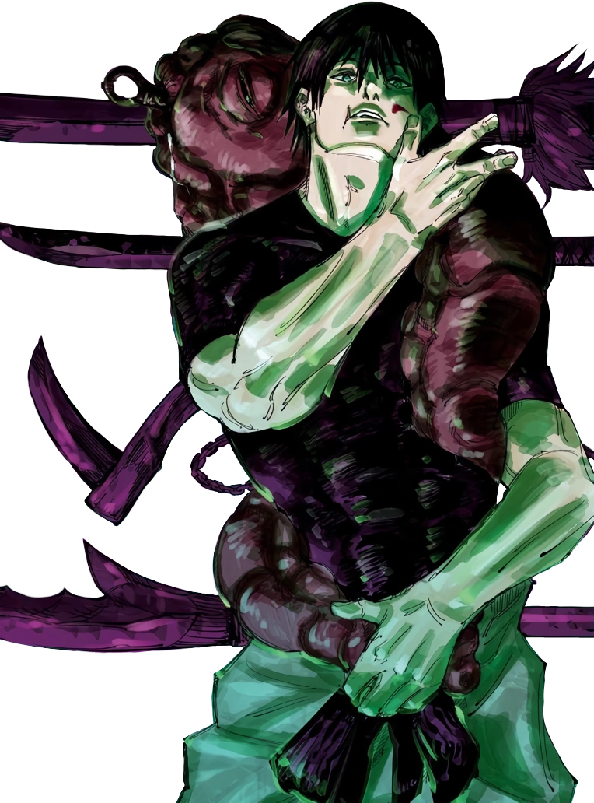

Acerca de Toji Fushiguro
¡Bienvenido a mi pagina! Aquí, aprenderás más sobre Toji Fushiguro!
Toji Fushiguro, nacido como Toji Zenin, es un personaje secundario recurrente de Jujutsu Kaisen. Fue miembro del Clan Zenin y el padre de Megumi Fushiguro y Tsumiki Fushiguro.
Durante sus días trabajando como Usuario Maldito luego de abandonar el Clan Zenin, recibió un trabajo de la Asociación de Vasijas del Tiempo con el fin de asesinar a la próxima Vasija de la Sustancia Estelar del Señor Tengen. Falleció como resultado de su enfrentamiento contra Satoru Gojo y antes de morir, dejó a Megumi en su cuidado.
